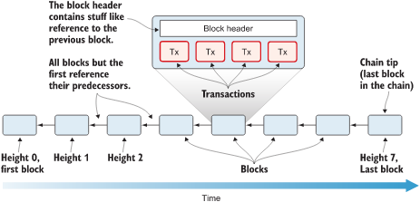
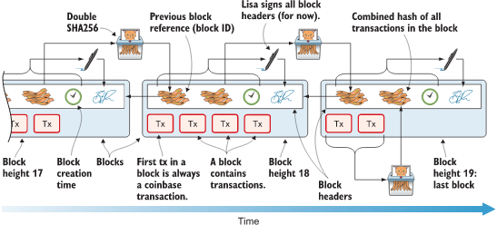
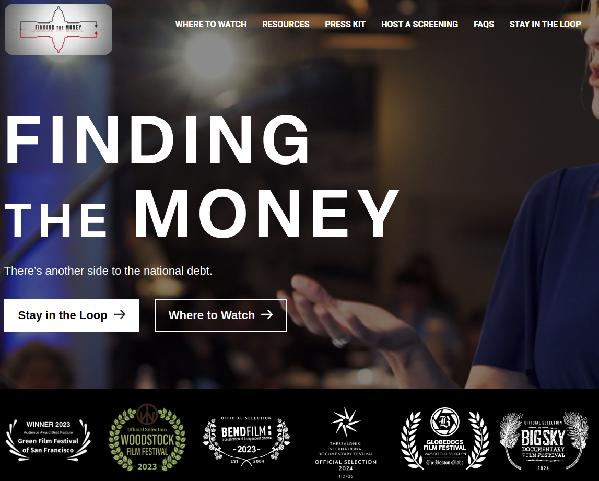

Aplicaciones cifrado
Mikel Egaña Aranguren
Aplicaciones cifrado
- Firma digital
- Certificados
- TLS
- SSH
- Bitcoin
Firma digital
Miren le manda un mensaje a Iker usando un sistema de clave pública
Nadie puede leer el mensaje de Miren a Iker pero cualquiera podría haberlo mandado
¿Cómo sabe Iker que se lo ha mandado Miren o que nadie lo ha modificado?
Solución: Miren firma sus mensajes
Firma digital
Sólo el usuario legítimo puede firmar su documento
Nadie podrá falsificar una firma
Cualquiera puede verificar una firma digital
Firma digital
No se puede reutilizar una firma
No se puede modificar una firma
No se puede negar haber firmado un documento
No se puede alterar un documento después de haberlo firmado
Logramos Autenticidad, Integridad y No repudio
Firma digital
Miren obtiene un resumen criptográfico del mensaje: RC = hash (m)
Miren cifra el resumen criptográfico con su clave privada: Firma = e ( RC, Mprivada )
Miren envía el mensaje (cifrado o sin cifrar) y su Firma
Firma digital
Iker desencripta la Firma usando la clave pública de Miren: RC = ( Firma, Mpública)
Iker obtiene el resumen criptográfico del mensaje: RC' = hash (m)
Iker compara RC' con m para asegurarse que no ha sido modificado
Firma digital
Si además de firmarlo, Miren encripta su mensaje sólo Iker podrá leerlo: Se logra Confidencialidad, Autenticidad, Integridad y No Repudio
Puede hacerlo usando:
- Un sistema de criptografía asimétrica
- Un sistema de criptografía híbrido
Firma digital
Un sistema de criptografía asimétrica. Enviaría a Iker:
- Criptograma del mensaje cifrado con Mprivada y con Ipública
- Su Firma digital (el resumen criptográfico cifrado con Mprivada )
Firma digital
Un sistema de criptografía híbrido. Enviaría a Iker:
- Criptograma del mensaje cifrado con la clave de sesión
- Criptograma con la clave de sesión cifrada con Ipública
- Su Firma digital (el resumen criptográfico cifrado con Mprivada)
Confianza de firmas
Aunque utilicemos firmas digitales:
- ¿Cómo sabemos que la firma es de quien dice ser?
- ¿Cómo nos asegura una Autoridad de Certificación (AC) que una firma es de quien dice ser?
- ¿No podemos fiarnos de una firma que no esté avalada por una AC?
Confianza de firmas
Web of trust:
- Se usa en PGP, GnuPG y similares
- Un usuario certifica (firmando con su clave privada) que la clave pública de otro usuario es de confianza
- La confianza se propaga según la confianza que demos a los usuarios que firmen las claves
Niveles de confianza
- Desconocido: no nos fiamos de nada que firme ese
usuario (por desconocimiento)
- Ninguno: no nos fiamos de nada que firme ese usuario
(porque sabemos que lo hace mal)
- Marginal: nos fiamos de las claves firmadas por dos
usuarios con confianza marginal
- Absoluto: nos fiamos de todo lo firmado por ese usuario
Certificados
Public Key Infraestructure (PKI): Infraestructura que permite enlazar entidades/personas con sus claves públicas
- Web of Trust: PKI sin autoridad central, cualquiera puede certificar
- Certificados: PKI con autoridad central, solo los AC pueden certificar
Autoridad de Certificación
- Una entidad (AC) certifica que el usuario/entidad (su clave pública) es quien dice ser (Depende de la confianza en la AC que lo certifica)
- Almacena las claves públicas por nosotros
Certificados digitales
- La AC emite un certificado digital
- En el certificado digital el AC firma mediante su clave privada la clave pública de un usuario/entidad
Agencia de Registro
- Independiente de AC
- Comprobar la identidad del usuario/entidad antes de emitir el certificado
- Agencias tributarias, seguridad social, zuzenean, ...
Certificados digitales
Estándar X.509 de International Telecommunication Union (ITU):
- Contiene una identidad (Persona, entidad, ...) y una clave pública
- Firmado por un AC - el poseedor de la clave pública puede:
- Firmar con su clave privada (Esa firma se puede comprobar con la clave pública firmada por el AC, y que por tanto es de confianza)
- Establecer comunicaciones seguras (SSL, ...)
Certificados digitales: X.509
Estándar X.509:
- El AC debe mantener una base de datos de nombres distinguidos (ND) y de ACs subordinadas
- Cadena de confianza (Certification path validation algorithm)
- Certificate Revocation List (CRL)
Certificate Revocation List (CRL)
Una lista pública de certificados revocados, mantenida por el AC
Revocar: AC declara que ese certificado no es confiable
Certificate Revocation List (CRL)
Definido en RFC 5280
Posibles razones para revocación: unspecified, keyCompromise, cACompromise, affiliationChanged, superseded, cessationOfOperation, certificateHold, removeFromCRL, privilegeWithdrawn, aACompromise
OCSP (Online Certificate Status Protocol)
- RFC 2560
- Permite validar el estado de un certificado digital de manera online
- Es más eficiente que la verificación mediante CRLs: CRLs en desuso
- Ventaja: su actualización constante
- Desventaja: necesidad de conexión para la comprobación
OCSP (Online Certificate Status Protocol)
- Cada AC que proporciona el servicio mantiene un servidor OCSP
- Este servicio responde a las aplicaciones cliente que remitan una petición estandarizada y sepan interpretar la respuesta
Estructura de un certificado
Certificate
Version Number
Serial Number
Signature Algorithm ID
Issuer Name
Validity period
Subject name
Estructura de un certificado
Subject Public Key Info
Public Key Algorithm
Subject Public Key
...
Certificate Signature Algorithm
Certificate Signature
Estructura de un certificado
Distinguished Name
- C: country
- SP: state or province
- Locality: L
- Organization: O
- Organizational Unit: OU
- Common Name: CN
Estructura de un certificado

Certificado raíz
Subject Name == Issuer Name
Esta firmado por sí mismo: es el origen de la confianza (Nos fiamos de la entidad directamente, no hay una clave privada externa que firme su clave pública)
Implementación
- Los sistemas operativos y navegadores incluyen certificados raíz, asumiendo confianza de facto
- Firefox OCSP query responder, Izenpe
Let's encrypt
AC que emite certificados de forma gratuita para que todas las conexiones HTTP sean cifradas
https://letsencrypt.org/
Comunicaciones seguras
Protocolos basados en TLS/SSL - X.509 (RFC 5280):
- HTTPS: web
- S/MIME, SMTP, POP, IMAP: email
- EAP-TLS: wifi
- LDAP: autenticación
- VPN (OpenVPN): redes seguras
Transport Layer Security (TLS)
Transport Layer Security (TLS)
- Comienzo TLS
- TLS hand-shake
- Conexión TLS propiamente dicha
Comienzo TLS
- El cliente le pide al servidor usar TLS
- HTTP: cambiar de puerto 80 a 443
- Email: comando
STARTTLS
TLS hand-shake
- El cliente presenta al servidor una lista de algoritmos de cifrado soportados (simétricos, asimétricos, resumen)
- El servidor elige de esa lista los que soporta
- El servidor presenta un certificado al cliente; el cliente valida el certificado (con un AC)
TLS hand-shake
- El cliente genera una clave de sesión (Cifrado simétrico):
- El cliente genera un número aleatorio, lo cifra con la clave pública del servidor y se lo envia. En el cliente y el servidor generan una clave compartida a partir de ese número
- Usando el algoritmo Diffie-Hellman, se genera un clave secreta compartida
Conexión TLS propiamente dicha
- Solo si el hand-shake ha sido exitoso
- Los datos transmitidos se cifran con la clave de sesión y su integridad se verifica con los algoritmos resumen consensuados
- Es un conexión que mantiene el estado (stateful)
SSH (Secure Shell)
- Protocolo criptográfico para conectarse a servidores remotos
- Trust On First Use (TOFU): basta con poner nuestra clave pública en la máquina a la que nos queremos conectar
- A partir de ahi, como TLS, se usa una clave de sesión para transmitir los datos
SSH: usos habituales
- Logearse en una máquina remota y ejecutar comandos
- Transferencia de archivos mediante SFTP
- Copiar archivos mediante SCP
- Tuneles
- Port fowarding
- Conexiones X11 (Gráficos)
Bitcoin
Estas clases ...
... no son una apología de Bitcoin
... no son es una serie de consejos financieros
¿Por qué Bitcoin en SGSSI?
Es la criptomoneda más extendida, y muchos de sus conceptos también se usan en otras criptomonedas
Es una aplicación muy exitosa de:
- Cifrado asimétrico
- Algoritmos resumen
¿Por qué Bitcoin en SGSSI?
Asegura:
- No repudio: no se puede* deshacer una transacción
- Integridad: no se puede* modificar la historia del blockchain
- Autenticidad
- Pseudo-anonimato
- ...
Introducción a Bitcoin
Bitcoin es a la vez:
- (Técnico) Un libro de contabilidad descentralizado y transparente
- (Político - Económico) Un sistema monetario:
- Basado en el buen dinero ("sound money") según la Escuela Austríaca de economía
- Que consume mucha energía eléctrica para emitir nueva moneda
Introducción a Bitcoin
Bitcoin, como cualquier bien escaso, es susceptible de inversión (y especulación)
Eso hace que en las noticias siempre se hable de cuando sube y baja, pero eso no es lo más importante de Bitcoin
Lo más importante es cómo funciona para hacer transacciones monetarias, no como valor de inversión
¿Qué es Bitcoin?
Un sistema de dinero digital
Basado en una red a la que cualquiera puede unirse a través de un nodo, y no gobernada por bancos ni gobiernos
Protocolo: Bitcoin (con B)
Moneda: bitcoin (con b). Símbolo: BTC o XTC. Satoshi: 0,00000001 BTC
La red Bitcoin

La red Bitcoin
Un libro de contabilidad compartido (Todos los nodos tienen una copia)
El libro de contabilidad tiene todas las transacciones que se han hecho
La red Bitcoin
Procesar pagos
Asegurar que el libro de contabilidad compartido no se modifica
Poner bitcoins nuevos en circulación a una velocidad predeterminada
Pago

(1) Transacciones

(2) Red

(4) Carteras

¿Cómo se generan los Bitcoins?
- Mediante un proceso denominado minería, basado en una
prueba de trabajo (PoW)
- Prueba de trabajo: resolución de cierto problema
criptográfico por fuerza bruta
- Nadie puede controlar ni manipular el proceso de generación
de la masa monetaria (No se puede "imprimir dinero")
Minería
- Dos funciones fundamentales:
- Oferta monetaria: los mineros crean la nueva moneda (de
forma matemáticamente controlada)
- Seguridad: Mantienen la integridad de la cadena de
bloques donde se incluyen las transacciones
Minería
- Los mineros reciben una recompensa, que es la forma de crear
nuevos bitcoins
- Los mineros también se quedan con las pequeñas
comisiones de cada transacción
- En total se crearán aproximadamente 21 millones de
bitcoins
Red Bitcoin
Cifrado resumen (Hash):
- Para crear btcs, los mineros tienen que conseguir un hash
- Resumir claves públicas
- Resumir transacciones
- Etc.
Red Bitcoin (Blockchain)

Red Bitcoin (Blockchain)

Red Bitcoin (Proof of work)
Validar bloques >> Generar bitcoins
Validar: evitar doble gasto, timestamp adecuado, etc. >> generar hash
Ese hash tiene todos los anteriores
Pero el hash debe ser un número menor que target
Target va cambiando, para cambiar dificultad
Red Bitcoin (Proof of work)

Red Bitcoin (Proof of work)

Problemas que Bitcoin soluciona
- Falta de acceso a cuenta bancaria
- Falta de privacidad
- Transferencias entre países
- Hiper-inflación (*)
(*) Modern Monetary Theory (MMT)

Bitcoin vs instituciones financieras tradicionales
- Descentralizado
- Suministro limitado: 21 millones de bitcoins
- Sin fronteras
Suministro de bitcoins

Usos actuales de Bitcoin
- Ahorro
- Transferencias internacionales
- Compras
- Especulación financiera
- Certificado de propiedad
- Certificado de existencia
- ...
Cómo no usar Bitcoin
- Pagos pequeños (Lightning Network?)
- Pagos instantáneos (Lightning Network?)
- Inversión de todos nuestros ahorros (En realidad aplicable a cualquier actividad financiera)
Futuro de Bitcoin
Reserva de valor que respalda sistemas de transacción más rápidos (Como las tarjetas de crédito)
Por ejemplo proyecto lightning "empaqueta" muchas transacciones que luego se dan a la vez


{kind=link}
{kind=link}